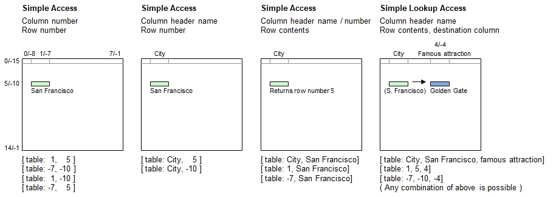

Introduction
The simple table access is one of the four basic table access methods where this one accesses exactly one cell in the table.
Syntax for Full Table Specification
The table must be referenced inside brackets using a combination of strings and/or numerals. These may be constant strings and numbers or expressions providing strings and numerals. Negative indexing is supported for both rows and columns.
| [ | Table Name | : | Simple Column Specifier | , | Simple Row Specifier | ] |
|---|---|---|---|---|---|---|
| Must be a string | - Header name, or | - Matching contents (string), or | ||||
| - Positive column number, or | - Positive row number, or | |||||
| - Negative column number | - Negative row number |
Syntax for lookup access (Choose column, followed by the row, and pick up data from a different column):
| [ | Table Name | : | Simple Column Specifier | , | Simple Row Specifier | , | Simple Column Specifier 2 | ] |
|---|---|---|---|---|---|---|---|---|
| Must be a string | - Header name, or | - Matching contents (string), or | - Header name, or | |||||
| - Positive column number, or | - Positive row number, or | - Positive row number, or | ||||||
| - Negative column number | - Negative row number | - Negative row number |
Principle

Programming examples
table load( table, "Examples\Cities.csv");
echo( [ table: 1, 5 ] );
echo( [ table: -7, -10 ] );
echo( [ table: 1, -10 ] );
echo( [ table: -7, 5 ], new line );
echo( [ table: City, 5 ] );
echo( [ table: City, -10 ], new line );
echo( [ table: City, San Francisco] ); // Exception to rule: Returns row numbers
echo( [ table: 1, San Francisco] );
echo( [ table: -7, San Francisco], new line );
echo( [ table: City, San Francisco, Famous attraction] );
echo( [ table: 1, 5, 4] );
echo( [ table: -7, -10, -4] );Output - Consider travelling
San Francisco
San Francisco
San Francisco
San Francisco
San Francisco
San Francisco
5
5
5
Golden Gate
Golden Gate
Golden Gate
Rules on Column Header Names
You have full freedom to specify the header names as you wish. Some rules need to be followed:
- If the header name contains 1 or more words and optionally single spaces inbetween, and they contain no special symbol which could be interpreted by B4P otherwise (e.g. hypen as minus sign), then the name can be used without quotation marks.
- If you want to refer a header name which is a number (e.g. 1, 24.12, etc.), then make sure to provided these numbers as strings, e.g. with quotation marks or using the str() function to convert numeric results to strings.